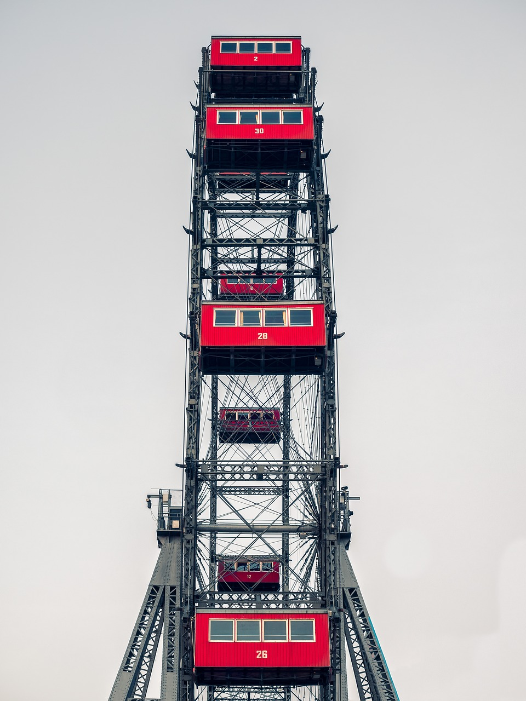
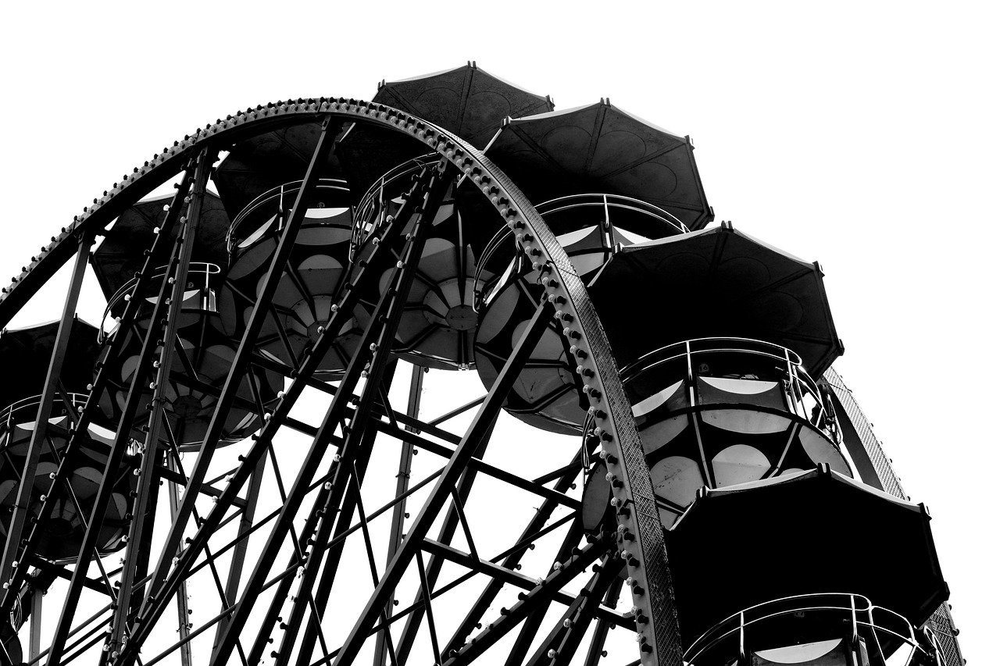
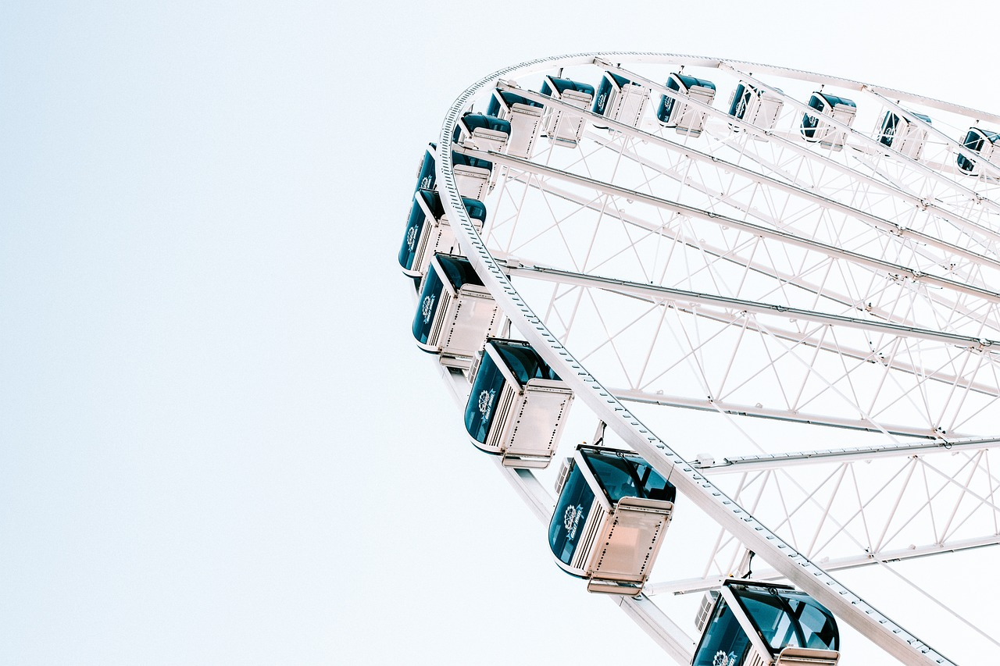

Ц"Лондонське Око" має 32 закриті кабінки. Кабінки символізують собою 32 передмістя Лондона. Кожна капсула може прийняти до 25 пасажирів. Один оберт займає приблизно 30 хвилин. Колесо зупиняється тільки для того, щоб інваліди і літні люди могли зробити посадку/висадку безпечно
 .
Найвища точка колеса огляду знаходиться на відстані 135 м від землі,
а швидкість обертання атракціону складає всього 26 см / с.
Повне коло колесо робить за період трохи більше півгодини,
що дає всім бажаючим чудову можливість не поспішаючи розглянути величний Лондон.
Кабінки «Лондонського ока» сконструйовані за типом прозорих капсул, до того ж випасти з них практично неможливо.
Їх кількість співпадає з числом передмість Лондона, відповідно, кожна з тридцяти двох кабінок символізує окремий район міста.
Вночі колесо красиво підсвічується різнокольоровими вогнями.
.
Найвища точка колеса огляду знаходиться на відстані 135 м від землі,
а швидкість обертання атракціону складає всього 26 см / с.
Повне коло колесо робить за період трохи більше півгодини,
що дає всім бажаючим чудову можливість не поспішаючи розглянути величний Лондон.
Кабінки «Лондонського ока» сконструйовані за типом прозорих капсул, до того ж випасти з них практично неможливо.
Їх кількість співпадає з числом передмість Лондона, відповідно, кожна з тридцяти двох кабінок символізує окремий район міста.
Вночі колесо красиво підсвічується різнокольоровими вогнями.
Лондонське Oкo — одне з найбільших оглядових коліс у світі. Розташоване у Лондоні . З висоти 135 метрів відкривається краєвид практично на все місто. Колесо огляду зроблене за проєктом подружжя Девіда Маркса і Джулі Барфілд, який переміг на конкурсі проєктів споруд на честь настання тисячоліття. Втілення проєкту в життя зайняло шість років. Після його спорудження у 1999 — 2006 роках було найвищим оглядовим колесом у світі. З 20 січня 2011 року, його офіційна назва EDF Energy London Eye. З середини січня 2015 року носить назву Coca-Cola London Eye Знаходиться це технологічне диво, яке вже само по собі є однією з головних визначних пам’яток Лондона, на південному березі мальовничої річки Темзи. . Своєрідну назву колесо носить неспроста, адже завдяки йому можна дійсно помилуватися практично всім містом Своєрідну назву колесо носить неспроста, адже завдяки йому можна дійсно помилуватися практично всім містом Своєрідну назву колесо носить неспроста, адже завдяки йому можна дійсно помилуватися практично всім містом
Лондонське Oкo — одне з найбільших оглядових коліс у світі. Розташоване у Лондоні .
З висоти 135 метрів відкривається краєвид практично на все місто. Колесо огляду зроблене за проєктом подружжя Девіда Маркса і Джулі Барфілд, який переміг на конкурсі проєктів споруд на честь настання
тисячоліття. Втілення проєкту в життя зайняло шість років.


Після його спорудження у 1999 — 2006 роках було найвищим оглядовим колесом у світі.
З 20 січня 2011 року, його офіційна назва EDF Energy London Eye. З середини січня 2015 року носить назву Coca-Cola London Eye
Знаходиться це технологічне диво, яке вже само по собі є однією з головних визначних пам’яток Лондона, на південному березі мальовничої річки Темзи. Своєрідну назву колесо носить неспроста, адже завдяки йому можна дійсно помилуватися практично всім містом.
"Лондонське Око" має 32 закриті кабінки.